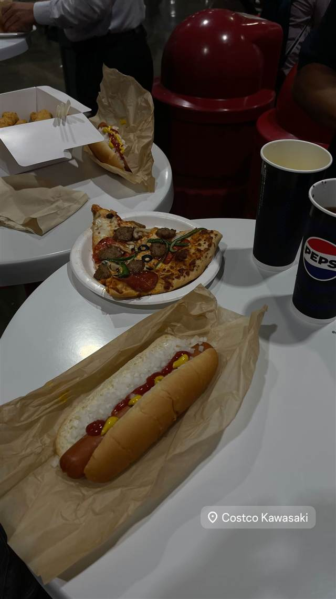
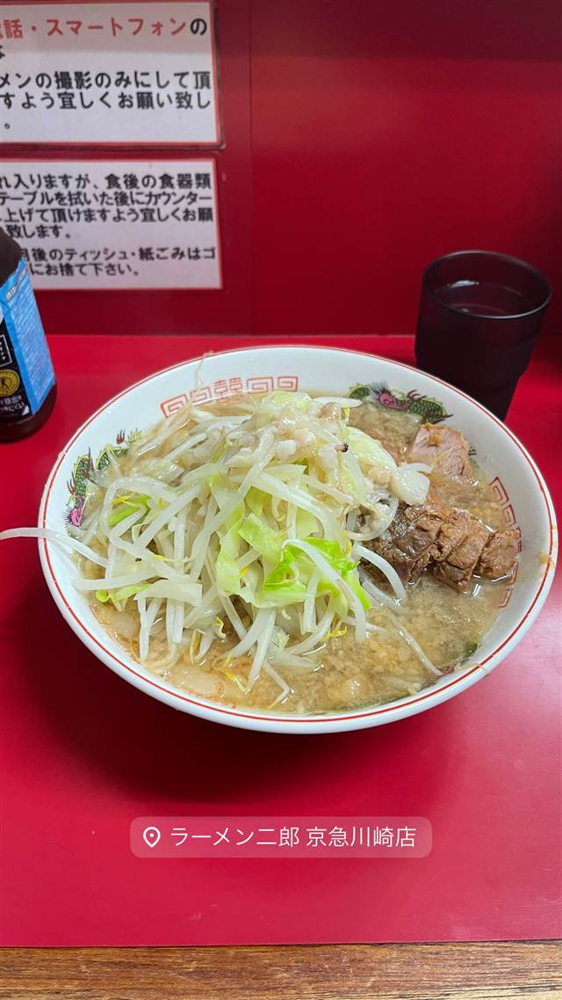
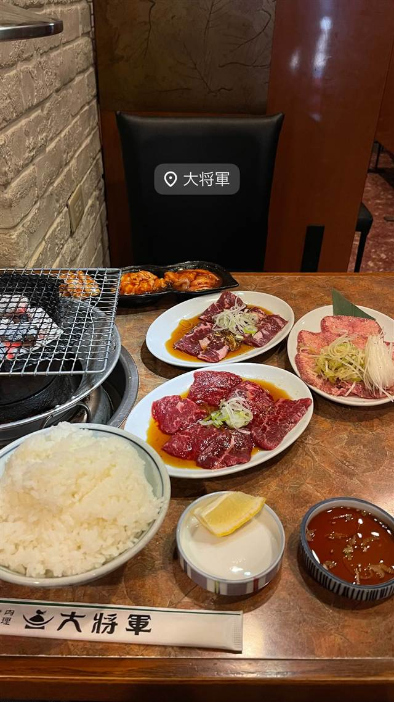

コストコホールセール 川崎倉庫店
ドリンク付き180円のクォーターパウンドホットドッグ
Costco Kawasaki
2007年7月にオープンした会員制の大型倉庫店。フードコートの「クォーターパウンドホットドッグ」はドリンク付きで180円という価格を長年維持しており、コストコの名物として知られている。
TRIVIA
へえ、という話
- 「クォーターパウンドホットドッグ」はドリンク付きで180円という価格を長年据え置いている
- 値上げしない方針は歴代CEOのこだわりとして知られている
| 創業 | 2007年7月12日オープン |
|---|---|
| 看板 | クォーターパウンドホットドッグ（ドリンク付き180円）、フードコートのピザ |
| こだわり | 大容量の一括仕入れとシンプルなオペレーションでコストを抑えたフードコート運営 |
| 予算 | 昼 ～¥999 夜 ～¥999 |
| 場所 | 東門前駅 神奈川県川崎市川崎区池上新町3-1-4 |
| 注意 | フードコートの混雑ピークは15〜16時、比較的空いているのは19〜20時 |
食べたもの：ホットドッグとピザ
NEARBY
近い店・同じ系統の店
-
 ★
つけ麺 八丁畷駅
三三七（さんさんなな）
鶏と煮干を効かせた濃厚つけ麺「煮干搾り」
昼 ～¥999 夜 ～¥999
★
つけ麺 八丁畷駅
三三七（さんさんなな）
鶏と煮干を効かせた濃厚つけ麺「煮干搾り」
昼 ～¥999 夜 ～¥999
-

二郎系(直系) 京急川崎駅 ラーメン二郎 京急川崎店 二郎の中でも珍しくキャベツがモヤシより多い初心者向け店 夜 ¥1,000～¥1,999 -
 醤油・中華そば 川崎駅・京急川崎駅
すず鬼直伝 スタミナらーめん かわさ鬼
三鷹の人気店が手がけた初プロデュース店の極太麺ラーメン
夜 ¥1,000～¥1,999
醤油・中華そば 川崎駅・京急川崎駅
すず鬼直伝 スタミナらーめん かわさ鬼
三鷹の人気店が手がけた初プロデュース店の極太麺ラーメン
夜 ¥1,000～¥1,999
-
 まぜそば・油そば 川崎駅
元祖油堂 川崎駅前店
8年かけて完成させた自家製麺、10種の調味料で味変できる油そば
まぜそば・油そば 川崎駅
元祖油堂 川崎駅前店
8年かけて完成させた自家製麺、10種の調味料で味変できる油そば
-
 豚骨 京急川崎駅
自家製麺 麺屋 利八
1日熟成させた自家製太麺と吊るし焼きチャーシューの鶏白湯
昼 ¥1,000～¥1,999 夜 ¥1,000～¥1,999
豚骨 京急川崎駅
自家製麺 麺屋 利八
1日熟成させた自家製太麺と吊るし焼きチャーシューの鶏白湯
昼 ¥1,000～¥1,999 夜 ¥1,000～¥1,999
-

焼肉 川崎駅 炭火焼肉 大将軍 川崎本店 60年変わらぬレシピの牛バラ煮込みカルビクッパ 夜 ¥5,000～¥5,999